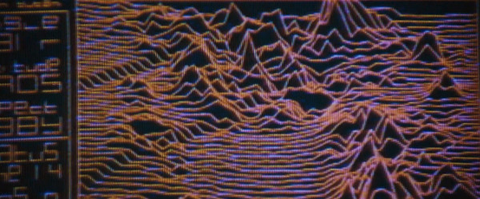
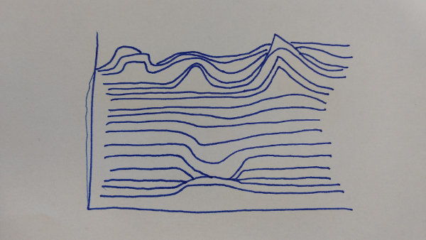

Example HW 1 Submission
Example Submission
This visualization is from the movie Alien (1979), directed by Ridley Scott.

This visualization appears on screen as the ship carrying our protagonists approaches a planetoid; the terrain is unknown, and the computer displays it as it senses during approach.
The terrain is displayed in a stratified manner; the lines are connected horizontally (giving the potentially misleading impression that the horizontal resolution is greater than vertical) and each “layer” appears to be opaque to the segments behind it. Most standard visualization tools could generate an image very similar to this by simply overplotting lines (and staggering them according to the perspective of the viewpoint), but blocking out the terrain behind a given line is more complex and difficult.
The data here has likely been generated by taking scan points and connecting them; while it’s possible that these are irregular in x and y, it looks as though they are regular in both.

I recreated this visualization by hand, and in doing so I changed the data somewhat. I discovered that it’s considerably harder to generate this by hand than I expected! I tried to draw out the lines, but the implied perspective made them appear strange and distorted.
While doing this, I discovered that according to Tisovˇcík 2012 this terrain was generated on the fly, rather than being stored ahead of time. It was also the first terrain used in a movie, although it is contemporaneous with the famous “Unknown Pleasures” album cover that features a similar visualization of a pulsar.